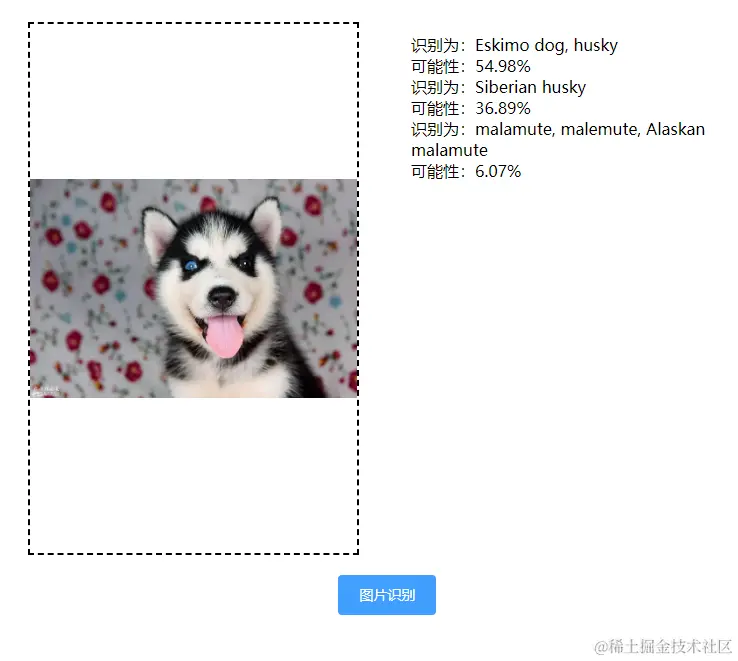
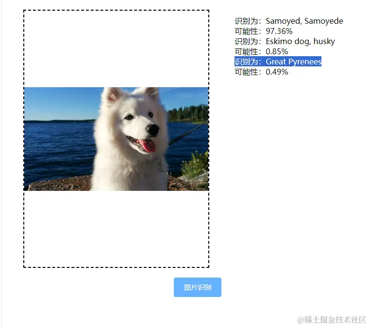
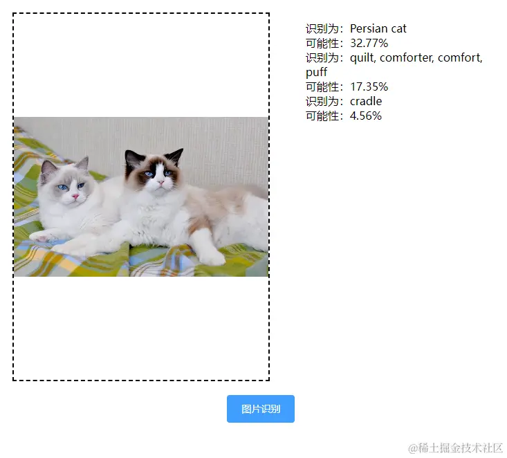

2024-07-08 17:08:13 · YinHao
预训练模型是预先在大量数据上进行训练得到的机器学习模型，这些模型可以直接使用或经过微调后用于特定的任务。
一种流行的图像分类模型称为 MobileNet，可作为带有 Tensorflow.js 的预训练模型使用。
我们先在项目中引入 tensorflow.js 和预训练模型 mobilenet
npm install @tensorflow/tfjs
npm install @tensorflow-models/mobilenet
import * as mobilenet from '@tensorflow-models/mobilenet' #导入模块
项目核心代码是
async beginClassify () {
const img = document.getElementById('img') // 获取上传的图片
const model = await mobilenet.load(); // 加载预训练模型
const predictions = await model.classify(img); // 将图片传入预训练模型，并返回预测结果
console.log('Predictions: ', predictions);
this.prediction = predictions
}
注意：如果你想看看 MobileNet 模型还能分类什么，你可以在 Github 上找到可用的不同类的列表。
预测西伯利亚雪橇犬的概率为 36%，预测阿拉斯加雪橇犬的概率为 6%，预测蛮成功的
预训练模型 mobilenet 返回了三个结果和各个结果的概率，从上图看到他预测为哈士奇的概率为 54%，
再试一个
预测萨摩耶的概率为 97%，预测阿拉斯加雪橇犬的概率为 6%，可以看到非常准确
预测波斯猫的概率为 32%
效率和性能：预训练模型已经在大规模数据集上进行了长时间的训练，因此它们已经具备了强大的特征提取和表示能力。当这些模型被迁移到新的任务或数据集上时，它们通常只需要进行少量的微调（Fine-tuning）就可以达到很好的效果，这大大减少了训练时间和计算资源的需求。对于浏览器这样的实时交互环境来说，效率和性能是非常重要的。
泛化能力：预训练模型通常是在大规模、多样化的数据集上进行训练的，这使得它们具有很强的泛化能力。这意味着它们可以很好地适应不同的任务和场景，而不仅仅是针对特定的数据集或任务进行优化。对于浏览器来说，这意味着可以使用相同的预训练模型来处理各种不同类型的网页内容和用户交互。
易于实现和部署：随着深度学习框架和库（如 TensorFlow、PyTorch 等）的发展，预训练模型的实现和部署变得越来越容易。浏览器开发者可以轻松地利用这些框架和库来加载和使用预训练模型，而无需从头开始训练模型。这大大加快了开发速度，降低了开发成本。
改进用户体验：预训练模型可以应用于各种浏览器功能中，以改进用户体验。例如，它们可以用于图像识别、语音识别、自然语言处理等领域，以提供更智能、更个性化的搜索、推荐和交互功能。此外，预训练模型还可以用于提高网页加载速度和渲染效果，从而进一步提升用户体验。